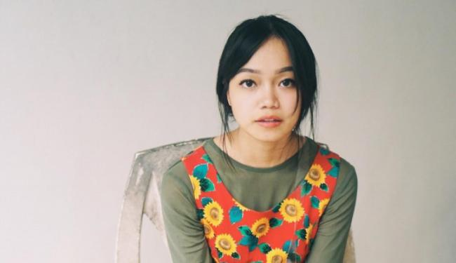
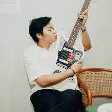
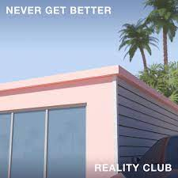
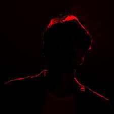
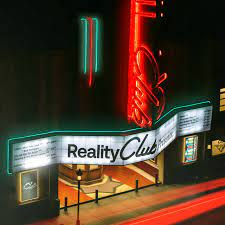
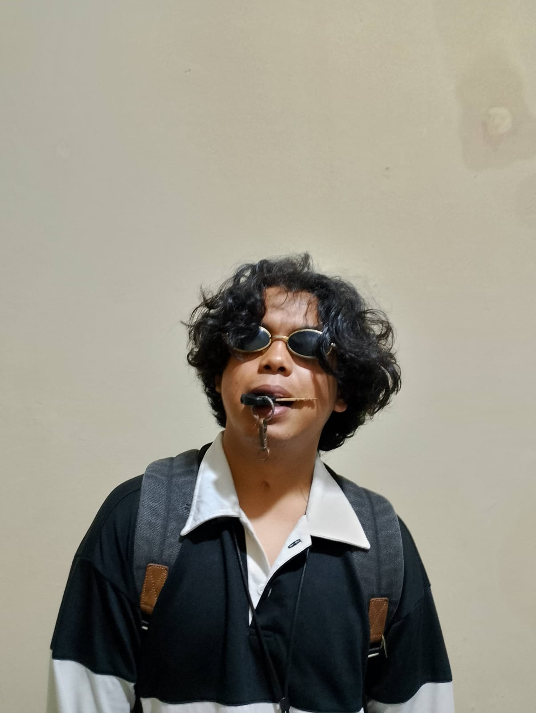

Vokalis
Fathia Izzati Saripudin adalah Pengacara, YouTuber, penyanyi, penulis lagu, aktris, dan penyiniar berkebangsaan Indonesia. Fathia merupakan vokalis dari grup musik Reality Club.
Fathia lahir di Jakarta pada 26 September 1994 dari ibu bernama Zulfanah dan ayah bernama Mohamad Hery Saripudin yang bekerja sebagai diplomat. Ia merupakan anak kedua dari tiga bersaudara dengan kakak bernama Faiz Novascotia Saripudin dan adik Farisha Aqilah Saripudin. Ia menghabiskan masa kecilnya di berbagai negara seperti Afrika Selatan, Kanada, dan Amerika Serikat, hal ini dikarenakan pekerjaan ayahnya yang merupakan seorang diplomat yang pernah menjabat sebagai Konsul Jenderal RI di Jeddah, Arab Saudi. Fathia menyatakan tidak mudah menjadi anak seorang diplomat karena harus mampu beradaptasi dengan cepat di berbagai belahan dunia. Sering kali, ia menghabiskan waktu selama 3-4 tahun di luar negeri karena tugas dari sang ayah. Tidak hanya itu, ia harus mempelajari ritual meja sejak kecil.
Selama di Indonesia, Fathia menempuh pendidikan formal di sekolah negeri. Ia sekolah di SMP Negeri 19 Jakarta dan SMA Negeri 82 Jakarta. Fathia melanjutkan pendidikan di Fakultas Hukum Universitas Indonesia dan lulus pada tahun 2018. Setelah lulus, ia sempat bekerja di sebuah firma hukum di tengah kesibukannya sebagai YouTuber dan vokalis grup musik. Namun ia tidak melanjutkan pekerjaannya.
Gitaris & vokalis
Faiz Novascotia Saripudin adalah seorang musisi dan penyanyi asal Indonesia yang juga merupakan vokalis, gitaris dan penulis lagu dari grup musik Reality Club.
Faiz lahir di Nova Scotia, Kanada pada 14 Juni 1993 dari ibu bernama Zulfanah dan ayah bernama Mohamad Hery Saripudin yang bekerja sebagai diplomat. Ia merupakan anak pertama dari empat bersaudara dengan adik bernama Fathia Izzati Saripudin, Farahdiena Saripudin, dan Farisha Aqilah Saripudin. Ia menghabiskan masa kecilnya di berbagai negara seperti Afrika Selatan, Kanada, dan Amerika Serikat, hal ini dikarenakan pekerjaan ayahnya yang merupakan seorang diplomat yang pernah menjabat sebagai Konsul Jenderal RI di Jeddah, Arab Saudi dan sekarang menjabat sebagai Duta Besar Republik Indonesia untuk Kenya.
Bass
Nugi Wicaksono, Gitaris Bas of Reality Club
Basis berzodiak gemini ini merupakan penggemar dari sastrawan Indonesia Sapardi Djoko Damono. Nugi dikenal sebagai member yang paling humoris dan ekspresif di antara para member.
Drummer
Era Patigo, Drummer of Reality Club.
Drummer yang memiliki mantan paling banyak di antara member lain ini juga sempat menempuh pendidikan di universitas yang sama dengan Fathia dan Faiz. Selain itu, ia juga merupakan mahasiswa berprestasi yang menyumbangkan medali emas baseball di ajang pertandingan PON 2016.
Reality Club merupakan grup musik indie rock asal Indonesia tepatnya berada di Jakarta yang dibentuk pada 16 April 2016. Grup musik ini digawangi oleh Fathia Izzati yang juga seorang youtuber.
Awalnya, grup musik ini terbentuk oleh Fathia Izzati, Era Patigo dan Mayo Falmonti pada 2016. Namun kemudian, Fathia mengajak kakaknya, Faiz Novascotia Saripudin dan Iqbal Anggakusumah untuk bergabung. Namun sayang, Mayo memutuskan untuk keluar setelah enam bulan terbentuk karena kesibukan pribadi dan digantikan Nugi Wicaksono.
Sejarah Reality Club
Para pencinta musik indie, terutama dari kalangan milenial, mungkin tidak asing dengan band satu ini. Reality Club, salah satu band indie beraliran rock asal Indonesia yang beranggotakan lima orang yaitu Fathia Izzati, Nugi Wicaksono, Iqbal Anggakusumah, Era Patigo, dan Faiz Novascotia Saripudin.
Band yang dibentuk pada 2016 ini sukses melahirkan karya musik yang berkualitas hingga melebarkan sayap ke luar negeri. Band yang dibentuk pada 2016 ini sukses melahirkan karya musik yang berkualitas hingga melebarkan sayap ke luar negeri.
Hingga kemudian Mayo yang mengajak Fathia dan Era untuk membentuk band. Dia lalu mengajak kakaknya, Faiz, serta temannya, Iqbal, untuk ikut bergabung. Karena kesibukan lain, Mayo memutuskan untuk keluar dari band dan digantikan oleh Nugi. Sebelum dikenal seperti saat ini, Reality Club pernah tampil di panggung sepi penonton. Saat ini, mereka telah menelurkan dua album yaitu “Never Get Better” pada 2017 dan “What Do You Really Know?” pada 2019.
Salah satu hit Reality Club adalah Is It The Answer? yang berhasil mengantarkan mereka menjadi nominasi dua penghargaan Anugerah Musik Indonesia (AMI) 2018 sebagai Pendatang Baru Terbaik dan Karya Produksi Alternatif/Alternatif Rock Terbaik. Beberapa lagu mereka yang cukup populer di antaranya Elastic Hearts, Alexandra, SSR, Telenovia, dan yang terbaru berjudul The Rush.
Pada 2019, Reality Club berhasil menyelesaikan tur mereka di beberapa daerah di Indonesia termasuk Bali, Palembang, dan Makassar. Tak hanya itu, mereka juga sukses tur di negara tetangga seperti Malaysia dan Singapura.
Di tahun 2020 mereka juga berencana tampil di acara festival musik tahunan yang diadakan di Austin, Texas, Amerika Serikat bertajuk South by Southwest (SXSW), namun terpaksa batal karena pandemi.
Album Reality Club
Never Get Better (2017)
Daftar lagu dari album ini:
- Things I Don't Know
- Shouldn't End This Way
- Cursive Curses
- Fatal Attraction
- Hesitation
- Okay
- Mentors A Graceful Retreat
- For Lack Of A Better Word
- Is It The Answer?
- Never Get Better
- Epilogue
What do You Really Know? (2019)
Daftar lagu dari album ini:
- Prologue
- SSR
- All Along All Things Were Wrong
- Caught in a Trap
- The Rush
- Vita o morte
- Telenovia
- On My Own, Again
- Alexandra
- A Sorrowful Reunion
- 2112
reality club presents… (2023)
Daftar lagu dari album ini:
- I Wish I Was Your Joke
- You Let Her Go Again
- Dancing In The Breeze Alone
- Tell Me I’m Wrong
- Desire
- Arrowhead Man
- Am I Bothering You?
- Anything You Want
- Four Summers
- Love Epiphany
Reality Club mempersembahkan video musik dari single “Am I Bothering You?”, salah satu lagu yang menjadi favorit para fans dan sempat viral di TikTok ini telah didengarkan puluhan juta kali secara daring. Video musik ini dirilis melalui kanal YouTube Reality Club, pada 26 Desember 2023 lalu.
CLICK HERE
Am I Bothering You?
Makna dari lagu "Am I Bothering You?" sendiri memiliki arti yang sangat relate bagi para muda mudi (terutama Gen-Z) yang sedang memulai masa-masa pendekatan. Penuhnya rasa ragu untuk memulai percakapan bahkan hingga enggan untuk memulai karena memiliki rasa ketakutan.

MUHAMMAD ABDURRAHMAN ARRODY
IF-11
10123462
Universitas Komputer Indonesia